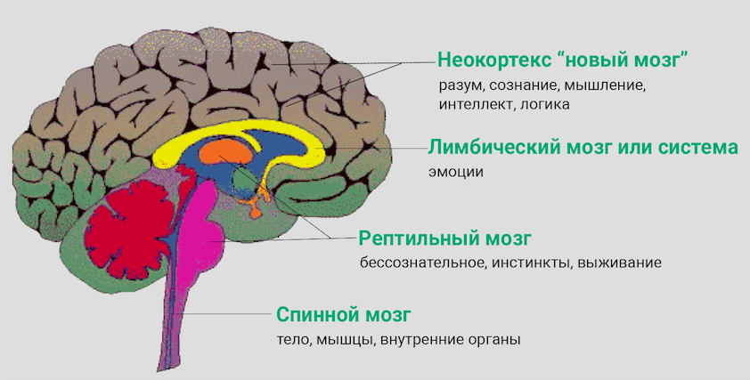
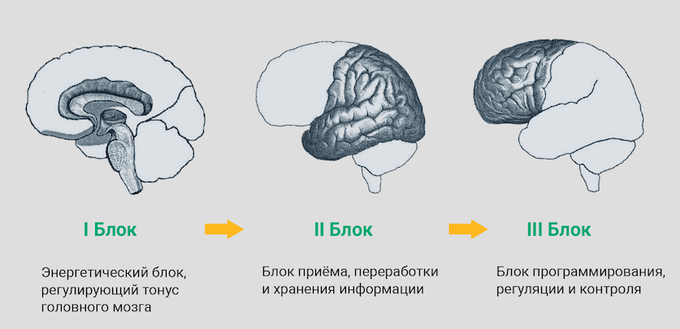
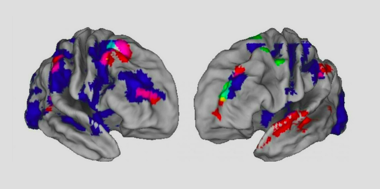

Устройство мозга и основные принципы его работы
Здравствуйте, уважаемые слушатели. Меня зовут Гузель Абдулова. Я являюсь педагогом, нейропсихологом и brain-тренером — специалистом по работе мозга. Сегодня мы поговорим о том, как работает наш мозг и почему важно знать, какие в нем происходят процессы, как они управляют нами и как мы можем взять под контроль свою жизнь, зная секреты работы мозга. Давайте приступим.
И начнем мы с устройства нашего мозга. Для примера расскажу, как раньше люди представляли, что такое мозг. В XIX веке люди думали, что мозг разделен на определенные части, каждая из которых отвечает за что-то конкретное, например, одна зона отвечает за то, где у нас находится надежда, другая — насколько мы будем уверены в себе, третья — будем ли мы влюблены или успешны и т.д. Так ли это?
Наука шагнула намного дальше, и на сегодняшний день мы понимаем, что наш мозг более сложная система, в которой нет четкого разделения, где что находится. Это не библиотека — там информация не разложена по полочкам. В 60-70 годы прошлого века была предложена другая идея о том, что у человека не один, а три мозга.
1. Рептильный мозг, который отвечает за наши инстинкты.
2. Лимбический мозг, который отвечает за наши эмоции.
3. Неокортекс — новый мозг, который сформировался в последние 40 тысяч лет. Он отвечает за мышление, принятие решений.

Параллельно с этой идеей, предложенной американскими учеными, советский нейропсихолог Александр Романович Лурия разработал теорию функциональной работы мозга. Александр Лурия предложил посмотреть на мозг немножко с другой точки зрения. Он выделил три основных блока мозга, которые отвечают за ту или иную деятельность. Сегодня эта теория стала очень популярной во всем мире. За что отвечают блоки мозга?

I. Энергетический блок. Регулирует тонус головного мозга: насколько у нас хватит сил, насколько мы эффективны.
II. Блок приема, переработки и хранения информация
III. Блок программирования, регуляции и контроля
В 90-е годы прошлого века многие страны стали открывать сотни лабораторий, вкладывать огромные средства в изучение головного мозга. Это во многом связано с попытками создать искусственный мозг: чтобы это сделать, люди изучают то, как работает человеческий мозг. Появляются новые технологии, способы изучения, и сегодня мы, например, точно знаем, что когда выполняем даже одно действие, активизируется много разных зон мозга. Посмотрите, как выглядит мозг человека, когда он заваривает кофе.

Здесь подключаются и зрительные центры (мы смотрим, что мы делаем), и обонятельные: мы чувствуем запах кофе — для многих именно в этом заключается главное удовольствие. И, конечно же, двигательные функции и контроль выполнения: насколько вкусно, правильно мы сварим кофе. И это только один пример.
Итак, когда мы выполняем какое-то действие, мы задействуем большое количество нейронов, у нас подключаются нейронные сети в разных участках головного мозга.
Это позволяет нам говорить о нейропластичности мозга. Что это значит? «Нейро» — это «нейроны» — нервные клетки, из которых состоят наши мозг и нервная система. «Пластичность», соответственно, — гибкость, способность меняться. Оказывается, поврежденный мозг может сам себя реорганизовать (заменить поврежденный участок другим). Иначе говоря, если одна зона мозга нарушена (из-за травмы, инсульта, хронического стресса), другая может взять на себя её функции. В этом и заключается нейропластичность мозга.
У нас миллиарды нейронов (на сегодняшний день подсчитано, что их где-то 86 миллиардов), и каждый нейрон имеет до 10 000 связей с другими нейронами. Поэтому если какой-то один путь вы потеряли, это не значит, что вы потеряете способность воспринимать информацию, ориентироваться в мире и т.д. Это только значит, что нужно искать новый нейронный путь.
Что в этом случае можно и нужно делать? Если вы будете ежедневно выполнять гимнастику для мозга, а самое главное — обучаться чему-то новому или тому же самому, но новыми способами, то в вашем мозге будут формироваться новые нейронные связи. Это отличная профилактика, которой надо уделять хотя бы 10-15 минут в день. Тогда и в пожилом возрасте ваш мозг будет в тонусе: у вас будут отличные память и внимание. О конкретных упражнениях мы поговорим в других лекциях.
Дополнительные материалы:
— Обзор книги доктора Амена «Измените мозг — изменится и жизнь»